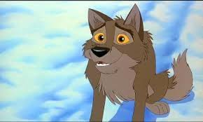
Balto: Un Husky siberiano héroe que lideró el trineo final en el envío de suero contra la difteria a Nome, Alaska, en 1925.
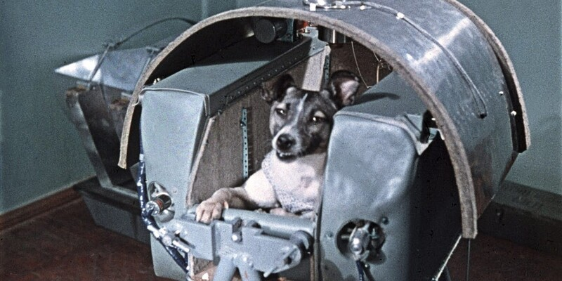
Laika – Primer ser vivo en orbitar la Tierra (Sputnik 2, 1957). Perra callejera moscovita, su misión allanó camino a la exploración espacial.
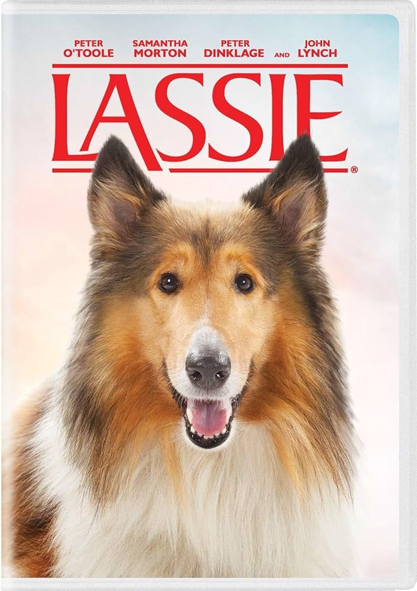
Lassie – Collie héroe de películas y series, referente de lealtad.

Scooby-Doo – Gran danés de la serie animada, que resuelve misterios con sus amigos.
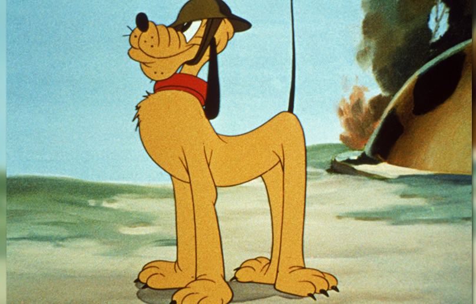
Pluto – Perro de Mickey Mouse (Disney). No antropomórfico, debutó en 1930.
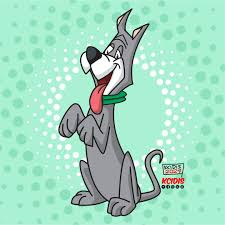
Astro: El perro de la familia Jetson en la serie animada Los Supersónicos.
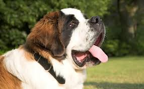
Beethoven: El san bernardo protagonista de una serie de películas, famoso por su tamaño y carácter afable.
Benji: Un perro mestizo callejero protagonista de varias películas, símbolo de esperanza y amistad.
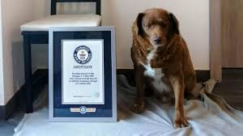
Bobi: Un Rafeiro do Alentejo que ostentó el récord Guinness como el perro más longevo de la historia, viviendo 31 años y 165 días.
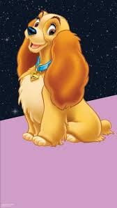
Lady: La perrita de la Dama y el Vagabundo
Marley: El labrador retriever travieso pero amoroso protagonista de Marley & Yo, basado en una historia real
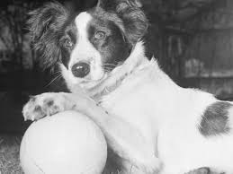
Pickles: Un caniche que descubrió el Trofeo Jules Rimet robado en 1966, durante la Copa Mundial de Fútbol en Inglaterra.
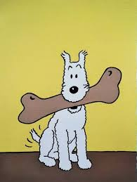
Snowy: El fox terrier compañero de Tintín en las aventuras creadas por Hergé.
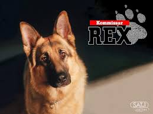
Rex: Es un famoso perro policía que resuelve crímenes en la icónica serie Comisario Rex.
Es un pastor alemán de Viena conocido por su inteligencia y por robar bocadillos.
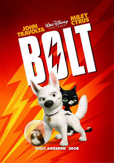
Bolt: Es un perro actor que cree tener superpoderes reales para proteger a su dueña.
Descubre que su mayor fuerza es la lealtad tras perderse en el mundo real.

Totó: Es el inseparable compañero de Dorothy Gale en la clásica historia de El Mago de Oz (1939). Más que una simple mascota, es el motor de la trama